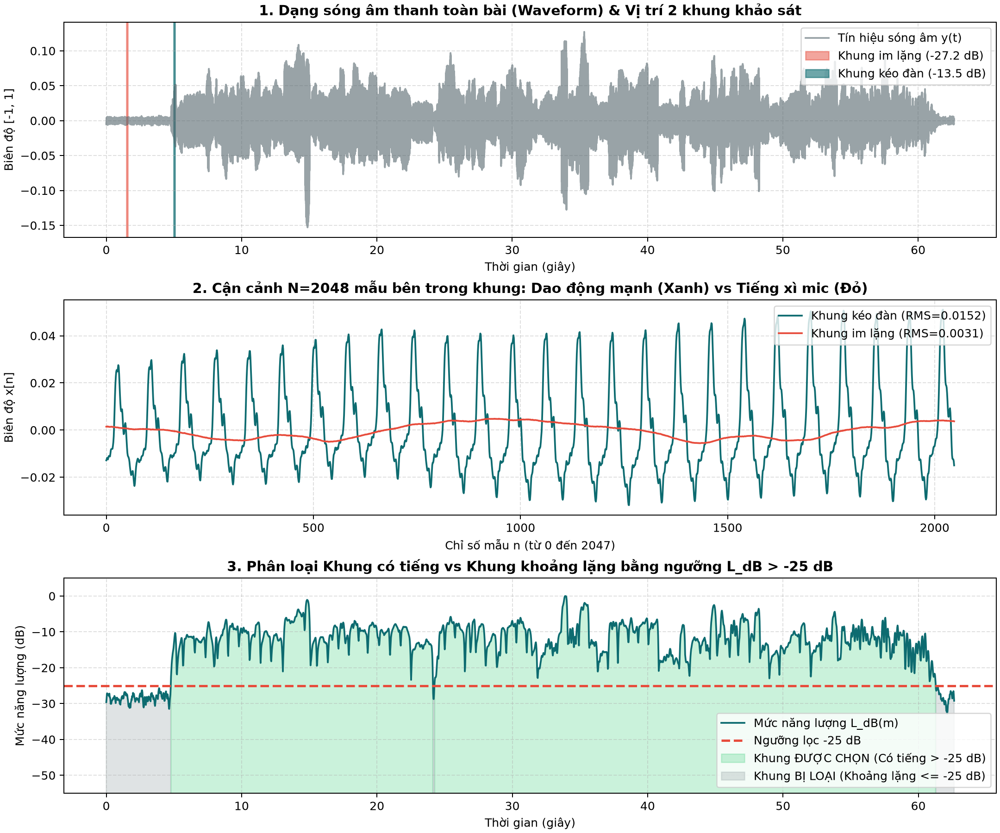
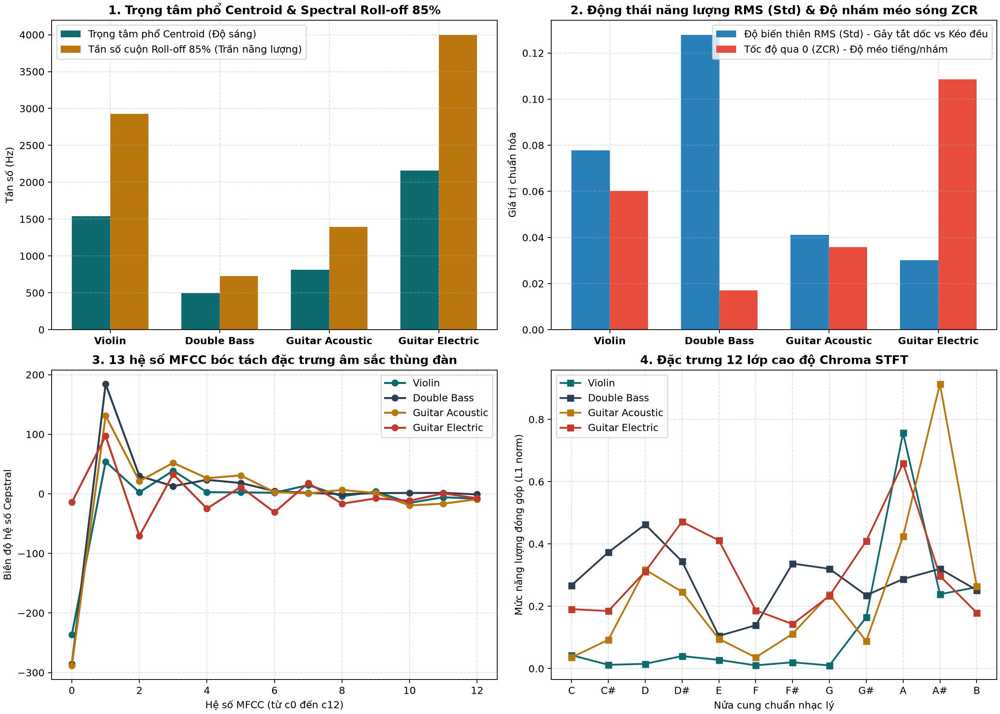

Cẩm nang thấu suốt Báo cáo BTL
Tài liệu giải mã toàn diện từng công thức toán học, nguyên lý âm học, cơ chế xử lý tín hiệu và các tình huống vấn đáp then chốt cho đề tài Hệ CSDL CBAR Nhạc cụ bộ dây.
01 Bản chất bài toán CBAR & Phân biệt với Phân loại
CBAR (Content-Based Audio Retrieval) là bài toán truy hồi thông tin âm thanh dựa trên nội dung theo mô hình Query-by-Example: Người dùng cung cấp một đoạn âm thanh mẫu $q(t)$, hệ thống chuyển đổi thành vector đặc trưng $\mathbf{q} \in \mathbb{R}^D$, so sánh khoảng cách hàm số $d(\mathbf{q}, \mathbf{x})$ với từng vector mẫu $\mathbf{x} \in \mathcal{X}_{\text{gallery}}$, và trả về danh sách có thứ tự $\text{Top-}K$ tệp tương đồng nhất.
| Tiêu chí | Phân loại nhạc cụ (Classification) | Truy xuất theo nội dung (CBAR) |
|---|---|---|
| Bản chất toán học | Ánh xạ hàm rời rạc: $f: \mathbb{R}^D \to \{c_1, c_2, \dots, c_K\}$ | Ánh xạ vào không gian mêtric: $(\mathcal{M}, d)$ với $d: \mathbb{R}^D \times \mathbb{R}^D \to \mathbb{R}^+$ |
| Đầu ra hệ thống | 1 nhãn cứng duy nhất (ví dụ: "Violin") | Danh sách xếp hạng $\text{Top-}K$ kèm khoảng cách tương đồng liên tục |
| Mục tiêu tối ưu | Tối đa hóa khoảng cách phân tách ranh giới quyết định (Decision Boundary) | Bảo toàn tính lân cận topo: các tín hiệu có âm sắc gần nhau thì $d(\mathbf{q}, \mathbf{x})$ phải nhỏ |
| Xử lý dữ liệu ngoài phân phối (OOD) | Bị ép gán sai nhãn cứng | Xếp hạng tìm ra các bản ghi có màu âm hoặc phong cách diễn tấu gần nhất |
Thầy hỏi Tại sao đề tài không làm bài toán phân loại nhạc cụ (Classification) mà lại xây dựng hệ CBAR?
CBAR cho phép người dùng tìm kiếm khi không biết tên bài hát, không cần từ khóa, mà muốn tìm các đoạn nhạc có âm sắc thùng đàn, cao độ hoặc kỹ thuật chơi (kéo vĩ hay gảy ngón) tương đồng trong kho lưu trữ âm thanh.
02 Vật lý tạo âm của nhạc cụ bộ dây
Đây là định luật vật lý cơ bản tính toán tần số âm thanh thấp nhất (nốt cơ bản $f_0$) mà một sợi dây đàn phát ra khi được kích thích dao động.
Dùng để giải thích nguồn gốc vì sao các nhạc cụ có kích thước khác nhau thì âm vực khác nhau: Tại sao đàn Violin bé thì tiếng bổng, còn đàn Double Bass to khổng lồ thì tiếng trầm như tiếng sấm.
| Ký hiệu | Tên gọi | Đơn vị | Ý nghĩa thực tế |
|---|---|---|---|
| $f_0$ | Tần số cơ bản | Hertz (Hz) | Quyết định cao độ nốt nhạc mà tai người nghe thấy (số lần dây dao động qua lại trong 1 giây). |
| $L$ | Chiều dài rung của dây | Mét (m) | Độ dài đoạn dây từ ngựa đàn đến phím bấm. Khi ngón tay bấm phím cao, làm ngắn $L \implies f_0$ tăng (tiếng cao lên). |
| $T$ | Lực căng của dây | Newton (N) | Độ căng của dây do chốt vặn đàn tạo ra. Dây càng căng ($T$ lớn) thì tiếng càng bổng. |
| $\mu$ | Mật độ khối lượng tuyến tính | kg/m | Độ nặng của sợi dây (1 mét dây nặng bao nhiêu kg). Dây bọc kim loại to, dày, nặng ($\mu$ lớn) $\implies f_0$ rất thấp (dây trầm). |
• Dây chun ngắn vs dài ($L$): Bạn cầm một sợi dây chun kéo căng, nếu gảy cả sợi dài thì tiếng trầm "bùng", nếu kẹp ngón tay vào giữa để sợi dây chun ngắn lại rồi gảy thì tiếng bổng "tưng". Nghệ sĩ bấm phím đàn chính là làm ngắn $L$ để tạo nốt cao.
• Căng dây ($T$): Khi bạn vặn chốt căng dây đàn chặt hơn, gảy tiếng sẽ thanh bổng hơn.
• Độ nặng ($\mu$): Một sợi dây thừng to đùng thì dao động chậm rì phát ra tiếng trầm; một sợi chỉ mảnh nhẹ thì dao động vun vút phát ra tiếng rít cao. Đàn Double Bass dùng dây kim loại to như ngón tay út, còn đàn Violin dùng dây mảnh như sợi cước!
Công thức xác định các tần số họa âm (harmonics / overtones) xuất hiện đồng thời khi sợi dây đàn rung.
Giải thích bản chất của âm sắc (timbre): Cùng chơi nốt La ($A4 = 440\text{ Hz}$), tại sao tai người phân biệt được ngay đâu là tiếng Violin, đâu là tiếng Guitar? Vì tỷ lệ năng lượng giữa các họa âm $f_1, f_2, f_3\dots$ của hai cây đàn hoàn toàn khác nhau.
| Ký hiệu | Tên gọi | Ý nghĩa thực tế |
|---|---|---|
| $n$ | Bậc họa âm ($1, 2, 3\dots$) | Số múi sóng dừng trên sợi dây. $n=1$ là nốt cơ bản (rung 1 múi), $n=2$ là rung đôi múi (quãng 8), $n=3$ là rung 3 múi (quãng 5 trên quãng 8)... |
| $f_n$ | Tần số họa âm bậc $n$ | Bội số nguyên của $f_0$. Ví dụ $f_0 = 100\text{ Hz}$ thì sẽ có các họa âm kèm theo ở $200\text{ Hz}, 300\text{ Hz}, 400\text{ Hz}\dots$ |
Giống như hai người cùng quay dây nhảy: nếu quay chậm thì cả sợi dây chỉ phồng lên 1 múi to ở giữa ($n=1$). Nếu quay thật nhanh và khéo, sợi dây có thể thắt lại ở giữa và chia thành 2 múi, 3 múi uốn lượn. Sợi dây đàn khi gảy đồng thời rung theo tất cả các kiểu múi đó cùng lúc!
03 Nền tảng xử lý tín hiệu âm thanh số
Định lý toán học quy định tốc độ số hóa âm thanh: Một giây máy tính cần phải ghi lại (lấy mẫu) bao nhiêu con số để không làm méo mó tín hiệu sóng âm ban đầu.
Cơ sở lý thuyết bảo vệ quyết định kỹ thuật chọn tần số lấy mẫu $f_s = 22\,050\text{ Hz}$ cho toàn bộ 600 file WAV.
| Ký hiệu | Tên gọi | Giá trị trong đề tài | Giải thích |
|---|---|---|---|
| $f_s$ | Tần số lấy mẫu | $22\,050\text{ Hz}$ | Mỗi giây âm thanh được đo và lưu thành đúng $22\,050$ con số mẫu rời rạc. |
| $f_{\text{Nyquist}}$ | Tần số Nyquist | $11\,025\text{ Hz}$ | Giới hạn tần số âm thanh cao nhất mà hệ thống có thể thu lại được ($f_s / 2$). |
| $f_{\max}$ | Tần số cao nhất của nhạc cụ | $\approx 2\,637\text{ Hz}$ (nốt E7) | Nốt cao nhất của đàn Violin trong bài là $2\,637\text{ Hz}$. Mức $11\,025\text{ Hz}$ lớn gấp 4 lần nốt cao nhất, thoải mái chứa trọn các họa âm quan trọng. |
Hãy tưởng tượng bạn lấy điện thoại quay video một chiếc cánh quạt trần đang quay tít. Nếu máy quay chụp quá chậm (dưới 2 lần tốc độ quay), bạn sẽ thấy một ảo giác kỳ lạ: cánh quạt dường như đang quay lùi ngược lại hoặc đứng yên! Trong âm thanh cũng y hệt: nếu tần số lấy mẫu $f_s$ quá thấp, các nốt nhạc cao vút sẽ bị méo biến dạng thành một nốt trầm ồm ồm giả tạo (hiện tượng chồng phổ Aliasing). Định lý Nyquist bắt buộc $f_s > 2 f_{\max}$ để triệt tiêu hoàn toàn ảo giác này.
Công thức kỹ thuật phân chia dòng âm thanh dài thành các lát cắt thời gian siêu nhỏ để máy tính phân tích phổ.
Tín hiệu âm nhạc biến đổi liên tục theo từng nốt (phi dừng). Không thể phân tích cả bài hát 3 giây cùng một lúc. Ta phải chia thành các khung nhỏ $\approx 93\text{ ms}$ (trong $93\text{ ms}$ này tiếng đàn chưa kịp đổi nốt, xem như đứng yên) để trích xuất đặc trưng.
| Tham số | Ý nghĩa | Thời gian thực | Tại sao lại chọn giá trị này? |
|---|---|---|---|
| $N = 2048$ | Kích thước khung | $92{,}88\text{ ms}$ | Là lũy thừa của 2 ($2^{11}$) giúp thuật toán FFT chạy siêu nhanh. |
| $H = 512$ | Bước nhảy (Hop size) | $23{,}22\text{ ms}$ | Sau khi tính xong 1 khung, cửa sổ trượt tới trước 512 mẫu để tính khung tiếp theo. |
| Overlap $75\%$ | Độ gối đầu | $(2048-512)/2048$ | Hai khung liền nhau gối lên nhau $75\%$, đảm bảo thông tin mượt mà, không bị sót nốt ở mép cắt. |
| $\Delta f \approx 10{,}77\text{ Hz}$ | Độ phân giải tần số | $10{,}77\text{ Hz}$ / bin | Khoảng cách giữa hai vạch đo tần số. Độ mịn $10{,}77\text{ Hz}$ đủ để tách bạch các nốt trầm của Double Bass. |
Âm nhạc biến đổi liên tục giống như một bộ phim hành động. Bạn không thể hiểu bộ phim bằng cách chụp một bức ảnh phơi sáng kéo dài cả 2 tiếng đồng hồ (vì ảnh sẽ nhòe nhoẹt không thấy gì). Thay vào đó, máy quay chụp 24 khung hình mỗi giây. Trong một khung hình cực ngắn ($1/24$ giây), nhân vật như đang "đứng yên" để ta nhìn rõ. Chia khung âm thanh $N=2048$ mẫu ($\approx 93\text{ ms}$) chính là "chụp ảnh tĩnh" từng khoảnh khắc của tiếng đàn để phân tích phổ Fourier!
Đây là công thức đo độ to / năng lượng âm lượng của từng lát cắt âm thanh nhỏ (khung $m$), sau đó quy đổi sang thang đo chuẩn Decibel (dB) so với mức âm lượng to nhất của cả bản nhạc.
Trong một bài nhạc luôn có đoạn nghệ sĩ chơi đàn và đoạn dừng nghỉ (khoảng lặng). Công thức này dùng để:
- Lọc khoảng lặng (Bước 2): Biết chính xác khung nào có tiếng nhạc cụ phát ra và khung nào chỉ là tiếng xì mic phòng thu.
- Nhận diện cách chơi (Đặc trưng Bộ B): Nhạc cụ kéo vĩ (Violin) duy trì lực kéo đều nên RMS ổn định qua các khung; còn Guitar gảy buông tắt nhanh nên RMS sụt giảm dốc đứng.
| Ký hiệu | Tên gọi | Giải nghĩa cặn kẽ |
|---|---|---|
| $m$ | Chỉ số khung thời gian | Bài hát được cắt thành các khung $m = 0, 1, 2, \dots, M-1$. $m$ là thứ tự khung đang xét. |
| $N$ | Số mẫu trong 1 khung | Chọn $N = 2048$ mẫu (khoảng $0{,}093$ giây). |
| $n$ | Chỉ số mẫu bên trong khung | Chạy từ mẫu đầu tiên ($n=0$) đến mẫu cuối cùng ($n=N-1 = 2047$). |
| $x_m[n]$ | Biên độ sóng âm của mẫu thứ $n$ | Là giá trị số thực từ $-1{,}0$ đến $+1{,}0$ lưu dạng sóng âm thanh tại thời điểm đó. |
| $\sum_{n=0}^{N-1} x_m[n]^2$ | Tổng bình phương biên độ | Bình phương từng mẫu lên (để số âm thành số dương) rồi cộng tất cả $2048$ mẫu lại với nhau. |
| $\frac{1}{N} \dots$ | Chia trung bình | Lấy tổng năng lượng chia cho $2048$ để tìm năng lượng trung bình của một mẫu. |
| $\sqrt{\dots}$ | Căn bậc hai | Lấy căn bậc hai để đưa giá trị về cùng bậc đơn vị với biên độ gốc (RMS = Root Mean Square: Căn bậc hai của Trung bình Bình phương). |
| $\max_k \operatorname{RMS}(k)$ | Đỉnh RMS của cả bài | Máy tính duyệt qua tất cả các khung $k$ trong tệp, tìm giá trị RMS lớn nhất. Khung to nhất này được lấy làm mốc chuẩn $0\text{ dB}$. |
| $10^{-9}$ | Số epsilon ($\varepsilon$) | Một số dương siêu nhỏ cộng vào mẫu số để phòng trường hợp đoạn nhạc hoàn toàn im lặng (RMS = 0) không bị lỗi chia cho 0. |
| $20 \log_{10}(\dots)$ | Quy đổi sang Decibel | Tai người cảm nhận độ to theo cấp số nhân (logarit). Dùng hệ số $20$ vì RMS là đại lượng biên độ ($P \propto A^2 \implies 10 \log_{10} A^2 = 20 \log_{10} A$). |
| $L_{\text{dB}}(m)$ | Mức Decibel tương đối | Kết quả tính toán của khung $m$. Luôn luôn có giá trị $\le 0\text{ dB}$. |
- Square (Bình phương): Tính $x_m[n]^2$ cho từng mẫu. Bước này giúp triệt tiêu dấu âm (bởi sóng âm luôn dao động đối xứng qua mức 0) và biểu diễn năng lượng tức thời. Nếu chỉ lấy trung bình biên độ thông thường $\frac{1}{N}\sum x[n]$, các nửa chu kỳ dương và âm sẽ triệt tiêu nhau về gần bằng 0!
- Mean (Lấy trung bình): Lấy tổng bình phương của tất cả các mẫu rồi chia cho $N=2048$: $$\text{Mean Square} = \frac{1}{N} \sum_{n=0}^{N-1} x_m[n]^2$$ Đại lượng này chính là công suất trung bình của khung thứ $m$.
- Root (Khai căn bậc hai): Lấy căn bậc hai $\sqrt{\text{Mean Square}}$ để đưa đơn vị đo về lại cùng bậc biên độ ban đầu $[-1, 1]$.
Chạy code Python tính toán trực tiếp trên 2 khung đại diện của tệp độc tấu Violin:
| Bước tính toán | Khung 1: Im lặng / Tiếng xì mic (giây thứ 1.5) | Khung 2: Kéo đàn vang to (giây thứ 5.0) |
|---|---|---|
| Mẫu biên độ $x_m[n]$ | Rất nhỏ: $[0{,}00145, 0{,}00152, 0{,}00147\dots]$ | Dao động mạnh: $[-0{,}0128, -0{,}0123, -0{,}0117\dots]$ |
| 1. Square: $\sum x_m[n]^2$ | $0{,}019360$ | $0{,}755470$ (gấp gần 40 lần khung 1) |
| 2. Mean: $\frac{1}{2048} \sum$ | $0{,}00000945$ | $0{,}00036888$ |
| 3. Root: $\operatorname{RMS}(m)$ | $0{,}003075$ | $0{,}019206$ (to gấp hơn 6 lần) |
| Đỉnh $\max \text{RMS}$ cả bài | $\max_k \operatorname{RMS}(k) = \mathbf{0{,}072357}$ (khung to nhất đạt mốc $0\text{ dB}$) | |
| 4. Decibel: $L_{\text{dB}}(m)$ | $-27{,}43\text{ dB}$ | $-11{,}52\text{ dB}$ |
| 5. So sánh ngưỡng $-25\text{ dB}$ | $-27{,}43\text{ dB} < -25\text{ dB} \implies$ IM LẶNG (Bị loại) | $-11{,}52\text{ dB} > -25\text{ dB} \implies$ CÓ TIẾNG ĐÀN (Giữ lại) |

test/sample_violin.wav. Panel 1: Sóng âm toàn bài. Panel 2: Cận cảnh $N=2048$ mẫu bên trong khung kéo đàn (xanh) và khung im lặng (đỏ). Panel 3: Phân đoạn khung có tiếng ($> -25\text{ dB}$, màu xanh) và khung khoảng lặng/nhiễu ($\le -25\text{ dB}$, màu xám).Biến đổi toán học chuyển một lát cắt sóng âm từ miền thời gian (mẫu số dao động) sang miền tần số (bài nhạc đang gồm những nốt tần số nào, to bao nhiêu).
| Ký hiệu | Tên gọi | Ý nghĩa thực tế |
|---|---|---|
| $w[n]$ | Cửa sổ Hann | Hàm nhân hình cái chuông giúp làm mượt hai mép khung về $0$, triệt tiêu hiện tượng rò rỉ phổ (spectral leakage). |
| $e^{-j \frac{2\pi k n}{N}}$ | Hàm cơ sở phức Euler | Đại diện cho sóng hình sin ở tần số bin thứ $k$. Phép nhân và cộng dồn chính là đo xem sóng âm trùng khớp với tần số này nhiều hay ít. |
| $X(m, k)$ | Biên độ phổ phức | Cho biết tại khung $m$ và tần số $k$, sóng âm có độ lớn bao nhiêu và pha ban đầu thế nào. |
| $P(m, k) = |X|^2$ | Phổ công suất (Spectrogram) | Lấy độ lớn bình phương để tìm năng lượng thực tế của từng tần số. Đây là dữ liệu nền tảng để tính toàn bộ các đặc trưng MFCC, Centroid, Roll-off... |
04 Quy trình 11 bước xây dựng bộ dữ liệu (Chương 2)
Công thức tính Spectral Flux (Độ biến thiên năng lượng phổ) giữa hai khung thời gian liên tiếp để phát hiện thời điểm một nốt nhạc mới bắt đầu vang lên (Onset).
Lấy năng lượng dải phổ hiện tại $S_{\text{Mel}}(m, i)$ trừ đi khung ngay trước đó $S_{\text{Mel}}(m-1, i)$. Toán tử $\max(0, \dots)$ chỉ giữ lại phần năng lượng bùng nổ tăng lên (nốt mới xuất hiện), bỏ qua phần giảm năng lượng (nốt ngân nhỏ dần). Khi $\operatorname{SF}(m)$ vượt ngưỡng, một nốt mới được phát hiện.
Khi phát hiện đỉnh $\operatorname{SF}(m)$, nốt nhạc đã vang lên được một đoạn. Thuật toán tự động lùi ngược lại $40 - 70\text{ ms}$ về điểm năng lượng thấp nhất ngay trước đó để cắt trúng cú chạm dây ban đầu (Attack) — giữ trọn linh hồn âm thanh của nhạc cụ.
Giống như bạn ngồi trong căn phòng tối và có ai đó bật đèn pin lóe sáng. Dù trước đó phòng tối mịt hay mờ mờ, mắt bạn nhận ra ngay cú chớp sáng đầu tiên. Spectral Flux chính là "máy đo cú chớp sáng năng lượng" khi nghệ sĩ vừa đặt vĩ hoặc buông ngón gảy vào dây đàn.
Hệ số tương quan tuyến tính Pearson giữa hai tín hiệu âm thanh $x$ và $y$. Đo lường xem hình dạng sóng âm của hai file có trùng khít lên nhau từng dao động hay không.
Bộ dữ liệu URMP dùng lại cùng 1 track thu âm cho nhiều bản phối thính phòng. Nếu độ dài lệch dưới 1 giây và $r > 0{,}99$ (trùng nhau trên $99\%$), hệ thống khẳng định 100% hai file là một và loại bỏ 18 track trùng để chống rò rỉ dữ liệu (Data Leakage).
Giống như so sánh hai bản in dấu vân tay: Người ta đặt hai tờ giấy đè lên nhau rồi soi dưới ánh đèn. Nếu từng đường vân lượn sóng trùng khớp với nhau trên $99\%$ ($r > 0{,}99$), chắc chắn đó là dấu vân tay của cùng một người, dù có thể được chụp ở hai hồ sơ khác nhau!
06 Hệ thống 58 chiều đặc trưng (Chương 4)
Công thức bóc tách đặc trưng âm sắc (Timbre) cốt lõi nhất trong âm nhạc. Nó mô phỏng cách màng tai người nghe qua thang Mel và lọc tách hình dạng thùng đàn ra khỏi nốt nhạc.
Tách hình dạng thùng đàn: Nhờ MFCC, hệ thống biết được thùng đàn Violin nhỏ khác thùng Cello to, và tách biệt hoàn toàn Guitar điện (méo tiếng) khỏi 5 nhạc cụ thùng gỗ tự nhiên.
Hãy tưởng tượng bạn nói chuyện bình thường so với khi bạn áp miệng nói vào một chiếc ống bơ bằng nhôm. Giọng bạn (dây thanh quản) vẫn là một, nhưng chiếc ống bơ làm tiếng của bạn đanh và vang như người máy. Dây đàn chính là dây thanh quản (nguồn phát âm), còn thùng gỗ đàn chính là chiếc ống bơ (bộ lọc). MFCC có phép màu toán học bóc bỏ được nốt nhạc đang chơi để vẽ lại chính xác hình dạng chiếc ống bơ (chất liệu gỗ và thể tích thùng đàn)!
Tìm mốc tần số $f_r$ sao cho $85\%$ tổng năng lượng của âm thanh tập trung ở phía dưới nó.
Đo trần giới hạn phát xạ âm thanh: Đàn siêu trầm như Double Bass có $85\%$ năng lượng dồn dưới $1000\text{ Hz}$ → Roll-off cực thấp. Ngược lại Guitar điện méo tiếng phát tán họa âm cực mạnh lên tới $4000 - 8000\text{ Hz}$ → Roll-off cực cao.
Giống như bạn dùng vòi phun nước tưới cây: nếu bạn mở van nhỏ, nước chỉ bắn xa được 1 mét (Double Bass dồn 85% năng lượng dưới 728 Hz). Nếu bạn bóp chặt đầu vòi để áp lực cực mạnh, nước bắn xa tới tận 4 mét (Guitar điện bão hòa họa âm bắn tới 3998 Hz). Roll-off chính là cái thước đo xem "vòi nước âm thanh" bắn xa tới đâu!
Đếm tỷ lệ số lần sóng âm cắt qua đường số 0 (đổi dấu từ âm sang dương hoặc ngược lại) trong một khung thời gian.
Đo độ nhám, độ xước và độ méo của âm thanh:
- Hàm $\operatorname{sgn}(x)$ trả về $+1$ nếu $x > 0$ và $-1$ nếu $x < 0$. Nếu hai mẫu cạnh nhau đổi dấu thì $|\operatorname{sgn}(x[n]) - \operatorname{sgn}(x[n-1])| = |1 - (-1)| = 2$.
- Nhạc cụ méo tiếng (Guitar điện distortion) dạng sóng bị xén vuông liên tục → ZCR tăng vọt. Nhạc cụ trầm trơn mịn (Double Bass) dao động chậm → ZCR cực kỳ thấp.
So sánh giữa chiếc thuyền lướt trên sóng biển êm dịu và chiếc xe chạy qua gờ giảm tốc liên tục: Đàn Double Bass giống như thuyền lướt sóng: dao động uốn lượn thong thả nên rất ít khi cắt qua mực nước biển (ZCR cực thấp = 0,017). Guitar điện méo tiếng giống chiếc xe phi qua hàng nghìn gờ giảm tốc: sóng âm bị xén cạnh vuông chém qua vạch số 0 liên tục điên cuồng (ZCR vọt lên 0,1086)!
Trọng tâm hình học (momen bậc 1) của phổ tần số — tương tự như tính tâm khối lượng của một vật thể trong cơ học.
Đo lường trực tiếp cảm nhận của tai người về "độ sáng" (Brightness) của tiếng đàn: Lấy từng tần số $f_k$ nhân với mức to của nó $P(m, k)$, rồi chia cho tổng độ to. Năng lượng càng dồn về tần số cao thì $C(m)$ càng lớn $\implies$ tiếng đàn càng sáng mảnh (Violin sáng nhất, Double Bass tối nhất).
Tưởng tượng phổ âm thanh như một chiếc bập bênh: bên trái là các em bé ngồi (tần số thấp/trầm), bên phải là các võ sĩ cơ bắp ngồi (tần số cao/bổng). Trọng tâm phổ Centroid chính là điểm đặt trục đỡ để chiếc bập bênh thăng bằng: Nếu toàn em bé ngồi (Double Bass), trục đỡ phải dồn sát về bên trái (Centroid = 493 Hz). Nếu toàn võ sĩ ngồi (Violin, Guitar điện), trục đỡ bị kéo dạt về bên phải (Centroid = 1540 Hz đến 2156 Hz)!
Công thức gập toàn bộ các tần số trong âm nhạc về đúng 12 nửa cung chuẩn nhạc lý (Đô, Đô#, Rê... Si), bỏ qua sự chênh lệch quãng tám.
Chuẩn hóa $\ell_1$ đưa tổng 12 bin về bằng 1.0 (trở thành phân bố xác suất nốt nhạc độc lập với âm lượng to nhỏ). Nhạc cụ chơi giai điệu đơn nốt (như Violin, Viola) có Chroma tập trung nhọn ở 1-2 nốt; còn Guitar quạt hợp âm nhiều dây có Chroma tỏa đều ra nhiều nốt cùng lúc.
Hãy tưởng tượng một chiếc đồng hồ tròn có 12 số (tương ứng 12 nửa cung C, C#, D... B). Dù người nhạc công bấm nốt Đô ở dải siêu trầm (C2), dải trung (C4) hay dải siêu cao (C7), thì trên chiếc đồng hồ này, cây kim vẫn quay về đúng vị trí số 12 (nốt C)! Nhờ đó, đặc trưng Chroma nhận diện được hợp âm và giai điệu mà không quan tâm đàn đang đánh ở quãng cao hay thấp.
Để chứng minh các công thức trên máy tính chạy ra kết quả gì, dưới đây là số liệu đo đạc thực tế trên 4 tệp WAV độc tấu đại diện:
| Đặc trưng âm học | Violin (violin_001.wav) | Double Bass (double_bass_001.wav) | Guitar Mộc (guitar_acoustic_001.wav) | Guitar Điện (guitar_electric_001.wav) |
|---|---|---|---|---|
| Cơ chế & Thùng đàn | Kéo vĩ • Thùng nhỏ dải cao | Kéo vĩ • Thùng khổng lồ siêu trầm | Gảy buông • Thùng gỗ mộc rỗng | Gảy móng • Méo tiếng (Distortion) |
| Spectral Centroid (Độ sáng) | 1540,0 Hz (Rất sáng) | 493,6 Hz (Tối nhất) | 814,8 Hz (Ấm mộc) | 2156,3 Hz (Sáng rực do méo) |
| Roll-off 85% (Trần năng lượng) | 2927,6 Hz | 728,0 Hz (Dồn sâu ở đáy) | 1395,9 Hz | 3997,8 Hz (~4000 Hz cực rộng) |
| ZCR (Độ nhám / méo sóng) | 0,0603 | 0,0170 (Sóng trơn láng) | 0,0359 | 0,1086 (Gấp 6 lần Double Bass!) |
| RMS Std (Độ biến thiên năng lượng) | 0,0777 (Kéo vĩ duy trì) | 0,1279 | 0,0411 (Gảy nốt tắt dốc) | 0,0301 (Bị mạch nén biên độ) |
| MFCC [c0, c1, c2] | [-236, 54, 2] | [-285, 184, 29] | [-288, 131, 21] | [-14, 97, -70] (Tách biệt hẳn) |

test/demo_features.py).• Panel 1: Centroid (xanh) và Roll-off (vàng) vạch rõ sự tương phản giữa dải trầm của Double Bass và dải cao rực rỡ của Guitar điện.
• Panel 2: ZCR (đỏ) của Guitar điện vọt lên 0,1086 do sóng bị xén vuông; Double Bass có ZCR đáy 0,0170.
• Panel 3: 13 hệ số MFCC của Guitar điện (đường màu đỏ) tách biệt hoàn toàn khỏi chùm 3 nhạc cụ mộc thùng gỗ.
• Panel 4: Đồ thị 12 nốt Chroma cho thấy sự khác nhau rõ rệt về năng lượng hợp âm giữa các bản nhạc.
07 Chuẩn hóa, Hàm khoảng cách & Tìm kiếm Top-5
Chuẩn hóa độ lệch chuẩn Z-score: Đưa từng đặc trưng trong vector 58 chiều về dạng có giá trị trung bình bằng 0 và độ lệch chuẩn bằng 1.
Tưởng tượng bạn thi đại học 2 môn: môn Toán chấm theo thang điểm $1000$, còn môn Văn chấm theo thang điểm $10$. Nếu bạn cộng thẳng điểm hai môn lại để xét tuyển, thì điểm môn Văn coi như bị vứt đi hoàn toàn vì môn Toán quá lớn! Trong vector 58 chiều của ta cũng y hệt: Roll-off và Centroid lên tới vài nghìn Hz ($4000\text{ Hz}$), trong khi ZCR chỉ là $0{,}05$ và RMS chỉ là $0{,}1$. Chuẩn hóa Z-score đưa tất cả 58 chiều về cùng thang điểm chuẩn (tương đương quy mọi môn thi về thang 10) để tính toán công bằng!
Công thức đo khoảng cách sai khác (Root-Mean-Square Distance) giữa file truy vấn $\mathbf{q}$ và từng file $\mathbf{x}$ trong CSDL, sau đó cộng tổng có trọng số $\lambda_1, \lambda_2, \lambda_3$.
Bộ A có $\dim_A = 28$ chiều, Bộ B chỉ có $\dim_B = 4$ chiều, Bộ C có $\dim_C = 26$ chiều. Khoảng cách Euclidean tự nhiên tăng tỷ lệ thuận với $\sqrt{\dim}$. Nếu không chia, Bộ A tự nhiên sẽ lớn hơn Bộ B khoảng $\sqrt{28/4} \approx 2{,}65$ lần, đè bẹp vai trò của Bộ B! Phép chia cho $\dim_k$ giúp đưa khoảng cách trung bình của cả 3 bộ về cùng một bậc thang đo công bằng.
08 Bộ 18 câu hỏi vấn đáp điểm 10 của thầy cô
Câu 1 Tại sao lại dùng thang đo Mel trong MFCC thay vì giữ nguyên thang tần số Hz?
Tai người cảm nhận cao độ phi tuyến tính theo công thức màng đáy ốc tai: ở dải trầm ($< 1\text{ kHz}$), tai người phân biệt cao độ rất nhạy; ở dải cao, hai tần số lệch nhau hàng trăm Hz tai người nghe gần như tương đương. Thang đo Mel $m(f) = 2595 \log_{10}(1 + f/700)$ mô phỏng chính xác cơ chế sinh học này, giúp bộ đặc trưng tập trung độ phân giải vào dải tai người nhạy cảm nhất.
Câu 2 Tại sao sau khi lấy log năng lượng Mel lại dùng biến đổi DCT-II mà không dùng FFT lần nữa?
Sau khi đi qua 40 bộ lọc Mel gối nhau, năng lượng giữa các kênh có độ tương quan (correlation) rất cao. Biến đổi Cosine rời rạc (DCT-II) có khả năng giải tương quan (decorrelation) tối ưu, nén năng lượng vào các hệ số đầu và tạo ra các thành phần trực giao độc lập. Hơn nữa, DCT chỉ sinh số thực, tránh phần ảo phức tạp của FFT.
Câu 3 Tại sao chỉ lấy 13 hệ số MFCC đầu tiên ($c_0 - c_{12}$) mà bỏ các hệ số phía sau?
Theo mô hình Nguồn – Bộ lọc, trong miền quefrency, các hệ số thấp ($c_0 - c_{12}$) biểu diễn biến thiên chậm của phổ — chính là đường bao formant của thùng đàn (âm sắc). Các hệ số cao biểu diễn biến thiên nhanh — chính là các vạch họa âm thay đổi theo từng nốt nhạc. Bỏ các hệ số cao giúp đặc trưng âm sắc độc lập với cao độ nốt đang chơi.
Câu 4 Hiện tượng rò rỉ bản thu (Source Leakage / Track Bleed) là gì và em giải quyết thế nào?
Nếu chia ngẫu nhiên từng file 3 giây vào tập Gallery và Query, hai đoạn cắt từ cùng một bài nhạc của một nghệ sĩ có thể nằm ở cả hai bên. Khi đó hệ thống tìm đúng vì học thuộc âm sắc phòng thu/bài nhạc cụ thể chứ không phải nhận diện âm thanh nhạc cụ nói chung. Giải pháp là Source-wise Splitting: chia theo track nguồn gốc, toàn bộ các đoạn của 1 track chỉ được nằm ở Gallery hoặc Query.
Câu 5 Quy tắc Leave-One-Out trong tìm kiếm Top-5 có ý nghĩa gì?
Nếu người dùng lấy chính một file đang có trong Gallery làm Query, khoảng cách Euclidean với chính nó bằng 0 ($d=0$). Nếu không loại bỏ bản thân nó (Leave-One-Out), kết quả Top-1 luôn là chính nó — một kết quả tầm thường (trivial) không chứng minh được năng lực tìm kiếm của hệ thống.
Câu 6 Tại sao phải chuẩn hóa vector Chroma bằng chuẩn $\ell_1$ trên mỗi khung?
Chuẩn hóa $\ell_1$ ($\sum_{c=0}^{11} \widehat{\operatorname{Chr}}(m, c) = 1$) biến vector Chroma thành một phân bố xác suất năng lượng trên 12 nửa cung. Nhờ đó, đặc trưng hoàn toàn độc lập với âm lượng to hay nhỏ của người chơi đàn, chỉ phản ánh tỷ lệ đóng góp của từng nốt nhạc.
Câu 7 Kỹ thuật Temporal Pooling lấy Mean và Std có làm mất thông tin gì không?
Có, đây là một hạn chế trung thực được nêu trong mục 4.3 và 5.2 của báo cáo. Lấy $(\mu, \sigma)$ làm mất trật tự chuỗi thời gian (temporal sequence). Ví dụ: một nốt chơi to dần (crescendo) và một nốt chơi nhỏ dần (decrescendo) sẽ có cùng giá trị Mean và Std của RMS, dù cảm nhận nghe thực tế trái ngược nhau.
Câu 8 Nếu đưa vào một file âm thanh tiếng còi xe hoặc tiếng người nói, hệ thống sẽ xử lý thế nào?
Hệ thống vẫn trích xuất vector 58 chiều và tính khoảng cách bình thường, sau đó trả về Top-5 nhạc cụ có màu âm hoặc động thái năng lượng gần nhất. Tuy nhiên, vì không gian mêtric được huấn luyện trên 6 nhạc cụ bộ dây, nên với dữ liệu ngoài phân phối (Out-of-Distribution), kết quả không có giá trị phân loại chính xác mà chỉ là sự tương đồng hình học mêtric.
Câu 9 Tại sao không dùng khoảng cách Cosine trên toàn bộ 58 chiều mà lại dùng RMSD có trọng số?
Khoảng cách Cosine chỉ quan tâm đến góc giữa hai vector, bỏ qua hoàn toàn độ lớn (magnitude) của vector. Hơn nữa, 58 chiều thuộc 3 nhóm vật lý khác nhau (Âm sắc, Động học, Cao độ) với số chiều lệch nhau lớn (28, 4, 26). Dùng RMSD chia theo $\dim_k$ và gán trọng số $\lambda_1, \lambda_2, \lambda_3$ cho phép kiểm soát độc lập mức độ đóng góp của từng khía cạnh âm học.
Câu 10 Lỗi sub-harmonic của thuật toán pYIN ở Guitar có phải do lỗi code của nhóm không?
Hoàn toàn không. Đây là hiện tượng âm học kinh điển của bài toán ước lượng cao độ (Pitch Tracking). Khi đàn guitar chơi hợp âm đa âm (polyphonic), sự giao thoa sóng giữa các nốt tạo ra chu kỳ tuần hoàn lặp biểu kiến dài gấp đôi chu kỳ nốt thực, khiến thuật toán dò đơn âm pYIN bắt nhầm tần số bằng một nửa tần số thực (phân vị $p_{10}$ ghi nhận $58{,}9\text{ Hz} < 82{,}4\text{ Hz}$). Việc chỉ ra hiện tượng này khẳng định sinh viên phân tích số liệu thực nghiệm rất sâu sắc.